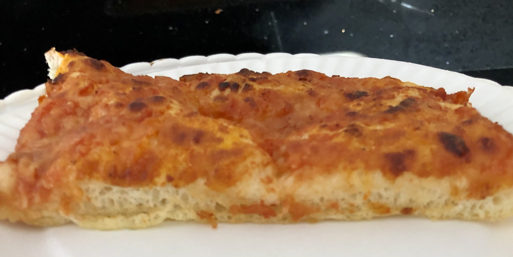

Pizza Recipe

Description
Easy to bake quick homemade pizza for a quick meal. This style of pizza was once found in neighborhood bakeries. This pizza is deceivingly light, crisp, and slightly spicy.
Enjoy with a can of soda.
Ingredients
Dough
- 1 ¼ cups warm water
- 1 teaspoon active dry yeast
- 3 cups bread flour
- ¼ teaspoon fine salt
- ¼ cup olive oil, divided
Sauce
- 1 can plain crushed tomatoes
- 1 can pizza sauce
Cheese
- 8 ounces low-moisture whole-milk mozzarella, very thinly sliced
- ¼ cup grated Pecorino Romano cheese
Directions
- Mix water and yeast in a small bowl, let stand until foam appears about 5 mins
- Mix flour and salt together in a bowel then pour in yeast mixture, knead until dough is smooth
- Grease large bowel with olive oil, form dough into a ball grease the top of it, place in the bowel, cover and let it rise about 30 mins
- Grease a baking sheet with olive oil, place the dough on the bottom and press it until flat on the sheet,
place the mozzarella over the dough, one cup of sauce over the mozzarella, sprinkle Pecorino Romano cheese on top, drizzle olive oil on the pizza.
-
Bake the pizza in a pre-heated oven for 15 to 20 mins until edges are dark brown but top is not burnt cool in a pan for 5 mins and cut in squares